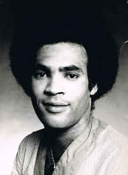

Music Artist

Ed Sheeran
English singer-songwriter
Edward Christopher Sheeran MBE is an English singer-songwriter. Born
in Halifax, West Yorkshire and raised in Framlingham, Suffolk, he
began writing songs around the age of eleven. In early 2011, Sheeran
independently released the extended play, No. 5 Collaborations
Project.
Kim Tae-hyung
South Korean singer-songwriter
Kim Tae-hyung, also known professionally as V, is a South Korean
singer and songwriter. He is a member of the South Korean boy band
BTS.
Jungkook
South Korean singer
Jeon Jung-kook, known mononymously as Jungkook, is a South Korean
singer and songwriter. He is the youngest member and vocalist of the
South Korean boy band BTS.

Boney M.
Vocal group
Boney M. was a Euro-Caribbean vocal group created by German record
producer Frank Farian, who was the group's primary songwriter.